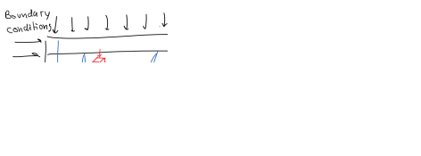
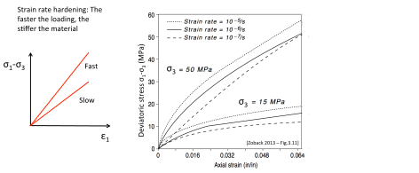
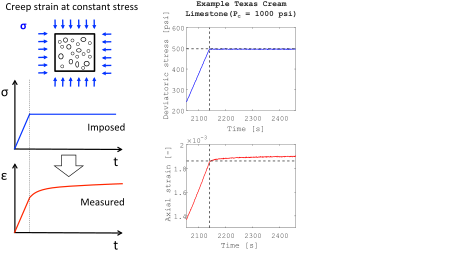
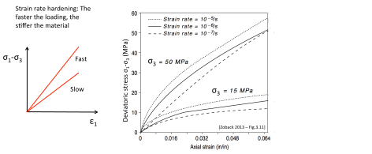
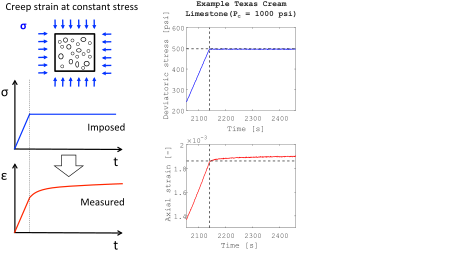
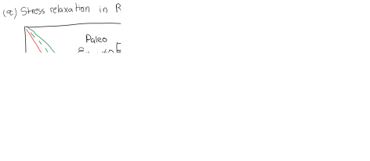
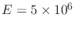
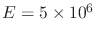

- Draw the normal and shear stresses defined as positive on the four sides of the following square solid element according to the given 2D coordinate system.
- An axial deviatoric test was performed in an organic-rich Mancos shale sample. The sample was cored in the direction of bedding. The sample diameter was
 in and the sample length was
in and the sample length was  in. The test was conducted in “as received conditions”. The data is available here.
The data contains Time (s), Axial Force (lb), axial displacement (in), and radial displacement (in).
in. The test was conducted in “as received conditions”. The data is available here.
The data contains Time (s), Axial Force (lb), axial displacement (in), and radial displacement (in).
- Calculate the axial stress as a function of axial force.
- Calculate axial and radial strains utilizing the displacements  and
 . Calculate the volumetric strain as well.
. Calculate the volumetric strain as well.
- In the same graph, plot: (i) axial stress versus axial strain, (ii) axial stress versus radial strain, and (iii) axial stress versus volumetric strain.
- Utilizing linear curve fitting, compute Young's modulus and Poisson's ratio in the interval of axial strain between 0.0028 and 0.0040. You may need to plot radial strain versus axial strain to calculate the Poisson's ratio.
- Isotropic loading means that applied stresses are the same in all directions.
- Using the equations of 3D linear elasticity (
 in Voigt notation) show that by applying an isotropic stress
in Voigt notation) show that by applying an isotropic stress
 (no shear) the volumetric strain is equal to
.
(no shear) the volumetric strain is equal to
.
- What would be the volumetric strain
 , for a shale rock with
psi and
, for a shale rock with
psi and  , when subjected to an isotropic change of stress
 3,000 psi? Write the full (3D) acting stress tensors and resulting strain tensor as matrices 3  3.
, when subjected to an isotropic change of stress
 3,000 psi? Write the full (3D) acting stress tensors and resulting strain tensor as matrices 3  3.
- What is the shale bulk modulus
 ?
?
- One-dimensional strain loading implies changes of stress with changes in strain in only one direction (usually the vertical direction).
- Using the equations of 3D linear elasticity (
in Voigt notation) show that by applying stress in one direction (say 1) and not letting the solid expand in the other two, you can recover the following expression
 .
.
- The proportionality coefficient in the equation above is called the constrained modulus
 . Is it lower or higher than E? What is the physical explanation?
. Is it lower or higher than E? What is the physical explanation?
- A high porosity carbonate reservoir is subjected to depletion and a change of effective vertical stress of 20 MPa. The carbonate rock Young's modulus is 1.5 GPa and Poisson's ratio is 0.10. What are the resulting strain and stress tensors due to compaction? Write the results as
 matrices.
- What are the bulk and pore compressibilities of this carbonate rock if
 . Provide answers in
. Provide answers in  sip.
sip.
- The top of the Barnett shale is located at about 7,950 ft TVD. At this depth:
- Compute the total vertical stress assuming a lithostatic gradient of 23.8 MPa/km.
- Compute the effective vertical stress assuming hydrostatic pore pressure gradient.
- Compute horizontal effective stresses assuming linear isotropic elasticity,
 =0.22 and that horizontal strains are nearly zero.
=0.22 and that horizontal strains are nearly zero.
- Write the tensor of effective stresses as a matrix.
- Compute total horizontal stress.
- Compute the ratio between effective horizontal stress and effective vertical stress.
- Compute the ratio between total horizontal stress and total vertical stress.
- Compute effective and total stresses assuming there is overpressure with
 , tectonic strains are
, tectonic strains are
 and
and
 , and the shale Young’s modulus is
 psi.
, and the shale Young’s modulus is
 psi.